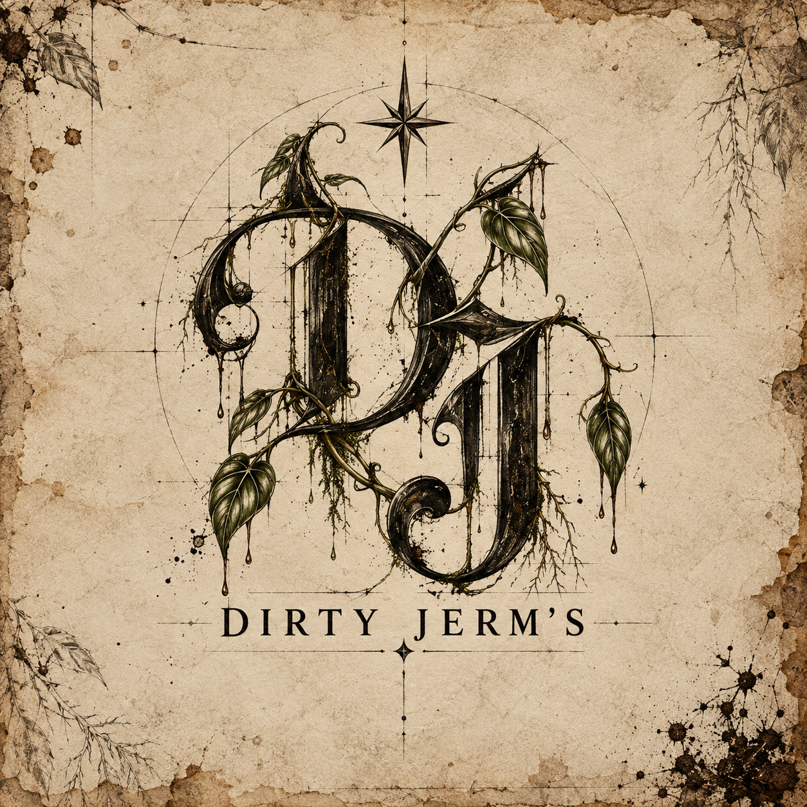

EST. 2026 · PRODUCT DESIGN FOR LIVING THINGS
Enabling life.
Not selling it.
Thoughtfully engineered objects for the things you grow — designed to support the moments that matter: climbing, rooting, unfurling, blooming.

GOOD THINGS GET DIRTY.
A small company can be polished without pretending it is enormous.
IN DEVELOPMENT
Something is growing.
Our first product is being built, tested, broken, revised, and built again in the Foundry.
We are not hiding the process. Dirty Jerm's believes the development work matters — the failures, the useful discoveries, and the moment something finally works exactly the way it should.
THE FOUNDRY
Where ideas become evidence.
The Foundry is Dirty Jerm's product-development and manufacturing workspace — birthplace of prototypes, questionable decisions, useful discoveries, and eventually finished products.
WHAT WE BELIEVE
We don't manufacture the growth, the attachment, the root, the leaf, the bloom, or the experience.
We create the conditions that help make those things possible.
THE HOUSE
Built carefully.
Kept curious.
Dirty Jerm's started with a simple frustration: products for plant people should do more than occupy space. They should solve real problems, respect how plants actually grow, and feel worth keeping around.
So we design one thing at a time, test it honestly, and keep the failures instead of pretending they never happened.
“It doesn’t need to begin perfectly. It needs to begin.”
OUR MOTTO
Good things
get dirty.
Growth is rarely neat. Neither is making something worth keeping.
At Dirty Jerm's, getting dirty means being willing to dig in: to experiment, make a mess, get something wrong, learn from it, and try again. Plants do it naturally. Roots push through soil. New growth fights for room. Progress leaves evidence.
We think good design works the same way. The finished thing can be beautiful, but the work behind it should never be afraid of dirt under its nails.
Get curious. Make a mess. Grow something good.
THE DIRTY JERM'S STANDARD
Make things worth making.
- 01Useful first.
Function earns the right to exist.
- 02Designed around life.
Growth is the event. The product enables it.
- 03Tested honestly.
Real use, real failures, real revisions.
- 04Made with personality.
Useful doesn't have to mean boring.
KEEP WATCH
The first chapter is being written now.
Dirty Jerm's is currently in product development. The shop comes later. The work starts now.
CONTACT
hello@dirtyjerms.comBusiness email is being set up. Until then, this address is our intended home.